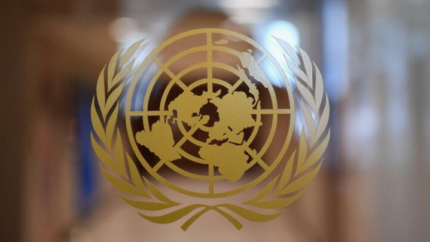

|  | Les voix continuent de s’élever après le drame de Karma survenu le jeudi 20 avril 2023. Le bureau des droits de l’homme des Nations-Unies demande une reddition des comptes et l’ouverture d’une enquête sur le récent massacre de civils au Burkina Faso. Le sommet, qui réunit depuis jeudi plus de 40 dirigeants internationaux dans la capitale française, a mis en avant le retard pris par la Banque mondiale et le Fonds monétaire international (FMI) pour relever les défis soulevés par le changement climatique et le lourd endettement des pays pauvres après la crise du COVID-19. "Nous prévoyons une augmentation globale de 200 milliards de dollars de la capacité de prêt des banques multilatérales de développement au cours des dix prochaines années en optimisant leurs bilans et en prenant plus de risques", est-il indiqué dans un communiqué final obtenu par Reuters. "Si ces réformes sont mises en oeuvre, les banques multilatérales de développement pourraient avoir besoin de plus de capitaux", ajoute le texte, suggérant que les pays riches pourraient avoir à injecter davantage de liquidités. Le sommet de Paris, organisé par le président français"Là-dessus, nous avons été beaucoup plus lents, beaucoup moins efficaces que pour la réallocation des droits de tirage spéciaux et nous actons tous que nous demandons un suivi beaucoup plus étroit et opérationnel de ces 100 milliards de financement climat", a admis Emmanuel Macron. Emmanuel Macron, a rassemblé une vingtaine de dirigeants africains, le Premier ministre chinois, Li Qiang, et le président brésilien Lula afin de trouver des solutions sur des sujets allant de l'allègement de la dette au financement pour le climat. |
Le 23 avril 2023, le procureur du Faso près le tribunal de grande instance de Ouahigouya a annoncé que 60 personnes avaient été tuées à Karma, localité située à une centaine de kilomètres au nord de Ouagadougou, et qu’une enquête était en cours. Pour l’ONU, cette enquête doit être “rapide , approfondie, indépendante et impartiale et doit déboucherAutre annonce du sommet, un accord pour réallouer 100 milliards de dollars de droits de tirages spéciaux ("Special Drawing Rights") du FMI - un instrument monétaire destiné à compléter les réserves officielles des Etats - vers les pays pauvres, en particulier africains. Sur ces 100 milliards, "61 milliards sont auprès du FMI et le travail va se poursuivre dans les prochains mois pour que les 39 milliards restants, pour lesquels des engagements ont été pris, arrivent dans les caisses", a précisé vendredi Emmanuel Macron. Le président de la République avait indiqué plus tôt que la France allait réallouer 40% de ses droits de tirages spéciaux. Autre avancée, mais qualifiée de "pas satisfaisante" par Emmanuel Macron lui-même, l'objectif de 100 milliards de dollars de financement pour le climat qui a de "fortes chances" d'être atteint cette année, d'après le communiqué. Cet engagement, pris dans le cadre de l'Accord de Paris sur le climat, est considéré comme insuffisant pour véritablement aider les pays pauvres. sur des poursuites crédibles, si l’on veut mettre fin à ces violations flagrantes”.